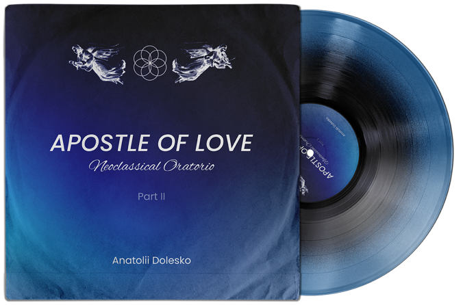

APOSTLE OF LOVE PT.1
PART - I

VII. CHRISTMAS THEME (Variation VII)
VIII. SERVICE THEME (VIII)
IX. GETHSEMANE THEME (Variation IX)
X. TRIBUNAL THEME (Variation X)
XI. CRUCIFIX THEME (Variation XI)
XII. RESSURECTION THEME (Variation XII)
XIII. APOCALYPSE THEME (Variation XIII)
POSTLUDE
SECOND ADVENT
The second part consists of eight numbers lasting 45 minutes, in which events based on the biblical story of the New Testament are shown. At the beginning of the second part, a number called "Christmas" is performed. The oratorio ends with the pompous final postlude "The Second Coming", in which a symphonic-choral sound and an expressive guitar solo are vividly combined